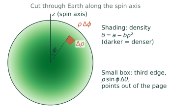

\(\iint_{\mathbb R^2}f\,dA=\lim\iint_{D_n}f\,dA\) for regions \(D_n\) that exhaust the plane
Enter fractions, decimals, pi, e, sqrt(...), sin(...), cos(...), exp(...), or log(...). Use ^ for powers and radians for angles. Vectors and bounds use commas. Decimal answers are checked to two decimal places (answers smaller than 0.1 need two significant digits); exact forms such as 6pi sqrt(37) are always fine. LaTeX such as \frac{1}{2}, \sqrt{2}, \pi, and \phi is also accepted. Equivalent expressions are accepted; potential functions may differ by a constant. Units are provided beside each input.
Hints and solutions are local worked guidance. They do not send messages to an AI service. Your inputs and notes stay in this browser; this is an ungraded practice site.
The Gateway Arch in St. Louis is a stainless-steel curve 630 feet tall and 630 feet wide, the tallest arch in the world. Its legs are triangular in cross-section, tapering from 54 feet per side at the ground to 17 feet at the top. Where is its center of mass? Not inside the steel.
Building the model
1From the real world
Outer width \(630\) ft; maximum height \(630\) ft
Leg cross-section: equilateral triangle, \(54\) ft per side at the base and \(17\) ft at the top
Inner edge: the parabola \(y=613(1-x^2/261^2)\) (legs 54 ft wide at the ground, 17 ft thick at the top)
Part (c): areal density proportional to leg thickness, falling linearly from 54 at \(y=0\) to 17 at \(y=630\)
3So the model is
The arch is the lamina \(A\) between the two parabolas, above \(y=0\) (feet)
Uniform density for part (b); \(\delta=54-\tfrac{37}{630}y\) for part (c)
The model arch: the band between the outer parabola (630 ft tall and wide) and the inner one. Inset: a leg’s equilateral cross-section, 54 ft per side at the base.
First, on paper
Without integrating, explain why \(\bar x=0\) for both densities. The NPS says each leg’s cross-section is an equilateral triangle with 54 ft sides at the base: place it with vertices \((0,0)\), \((54,0)\), \((27,27\sqrt3)\) and locate its centroid by averaging the vertices, with no integrals. Describe the arch region \(A\) as (region under the outer curve) minus (region under the inner curve), and explain how that turns its moments into differences. Before computing part (c), predict: will the tapering legs move \(\bar y\) up or down compared with part (b)? Finally, sketch the arch with your \(\bar y\) marked and explain how a body can balance at a point where it has no material.
Whiteboard kit ↓An image with the diagram, model, this task, and blank work areas. Add it to your group’s shared whiteboard as a background.
aFor the uniform region under \(y=h(1-x^2/w^2)\), above \(y=0\), enter \(\bar y\) as a function of h and w.
A step in the right direction
bFind \(\bar y\) for the uniform arch region \(A\).
A step in the right direction
cNow weight the arch by its leg thickness, \(\delta=54-\tfrac{37}{630}y\). Find \(\bar y\).
A step in the right direction
View full solution +
Follow the reasoning
Reflection \(x\mapsto-x\) maps the arch to itself and leaves \(\delta\) (which depends only on \(y\)) unchanged, so \(x\delta\) is odd and \(\bar x=0\). Triangle centroid: \(\big(\tfrac{0+54+27}{3},\tfrac{0+0+27\sqrt3}{3}\big)=(27,9\sqrt3)\approx(27,15.6)\) ft, one third of the way up from the base.
Region under \(y=h(1-x^2/w^2)\): \(M=\int_{-w}^{w}h(1-\tfrac{x^2}{w^2})dx=\tfrac43hw\) and \(M_x=\int_{-w}^{w}\tfrac12h^2(1-\tfrac{x^2}{w^2})^2dx=\tfrac{8}{15}h^2w\), so \(\bar y=\tfrac25h\) whatever the width \(w\).
Since \(A\) is the outer region with the inner region removed, \(M_A=\tfrac43(630\cdot315-613\cdot261)=51{,}276\) and \(M_{x,A}=\tfrac8{15}(630^2\cdot315-613^2\cdot261)\approx1.4373\times10^7\), giving \(\bar y\approx280.3\) ft. At \(x=0\) the steel lies between 613 and 630 ft, so the balance point is in the empty space under the arch.
The legs are thickest at the ground, so the weighting favours low points and \(\bar y\) should drop. With \(\iint y^k\,dA\) equal to \(\tfrac43wh,\ \tfrac8{15}wh^2,\ \tfrac{32}{105}wh^3\) for \(k=0,1,2\) on each region, \(M=\iint(54-\tfrac{37}{630}y)\,dA\) and \(M_x=\iint y(54-\tfrac{37}{630}y)\,dA\) give \(\bar y\approx229.8\) ft: about 50 ft lower.
Final answers
a.\(\frac{2 h}{5}\) ft
b.\(\frac{5988398}{21365}\) ft
c.\(\frac{406441825784}{1768433009}\) ft
Discussion
Concrete low in the legs adds weight near the ground, so it lowers the balance point further. A low center of mass makes the structure more stable against wind loads, and builders need the weight distribution to size the foundations and to plan the order in which segments are added so the half-finished legs do not tip.
Think it through
Real arches have a centroid curve that passes through the center of each cross-section, and the NPS also says the legs are filled with concrete up to 300 ft. Would that concrete move the balance point further down, and why does an arch builder care where the weight is?
Saved on this browser · Discussion prompt, not automatically graded
Problem 02Core
Weighing Earth’s core without digging
No borehole has come anywhere near the centre of a planet whose radius is 6371 km. Yet we know Earth’s centre is far denser than any rock at the surface. Two numbers measured from outside, Earth’s mass and how hard it is to change the direction of its spin (its moment of inertia), are enough to show it.
Building the model
1From the real world
Radius \(R=6371\) km; mass \(5.9722\times10^{24}\) kg; mean density \(5513\) kg/m3
Earth is a ball whose density depends only on the distance \(\rho\) from the centre
The density profile is quadratic
3So the model is
Density \(\delta(\rho)=a-b\rho^2\), with \(\rho\) in Earth radii (\(0\le\rho\le1\))
\(I\) is the moment of inertia about the spin axis

Earth as a ball whose density depends only on \(\rho\); a small spherical box has edges \(\Delta\rho\), \(\rho\,\Delta\phi\), and \(\rho\sin\phi\,\Delta\theta\).
First, on paper
Derive the spherical volume factor: a small box with sides \(\Delta\rho\), \(\Delta\phi\), \(\Delta\theta\) has edges of length \(\Delta\rho\), \(\rho\Delta\phi\), and \(\rho\sin\phi\,\Delta\theta\) (why?). Then explain why, for a density that depends only on \(\rho\), every mass or moment integral over the ball reduces to a single \(\rho\)-integral times an angular factor. Check the model on a uniform ball: what is \(I/(MR^2)\)? Is the measured 0.3308 bigger or smaller, and what does that say about where Earth’s mass is? Finally, as a cross-check on the published data, compute the work needed to lift 1 kg from the surface to infinity, \(\int_R^\infty GM/r^2\,dr\); explain why this improper integral converges and recover the escape speed.
Whiteboard kit ↓An image with the diagram, model, this task, and blank work areas. Add it to your group’s shared whiteboard as a background.
aMeasure distances in Earth radii (\(R=1\)). Enter the mass of the ball \(\rho\le1\) with density \(a-b\rho^2\) as a function of a and b.
A step in the right direction
bEnter the model’s moment-of-inertia factor \(I/(MR^2)\) about the spin axis as a function of a and b.
A step in the right direction
cChoose a and b to match the published mean density 5513 kg/m³ and moment-of-inertia factor 0.3308. What central density a does the model give, in g/cm³?
A step in the right direction
View full solution +
Follow the reasoning
The box’s edges are a radial step \(\Delta\rho\), an arc \(\rho\Delta\phi\) of a circle of radius \(\rho\), and an arc \(\rho\sin\phi\,\Delta\theta\) of a circle of radius \(\rho\sin\phi\) (the distance to the \(z\)-axis), so \(dV=\rho^2\sin\phi\,d\rho\,d\phi\,d\theta\). For a density depending only on \(\rho\), the angles separate and contribute \(\int_0^{2\pi}\!\int_0^\pi\sin\phi\,d\phi\,d\theta=4\pi\).
\(M=4\pi\int_0^1(a-b\rho^2)\rho^2\,d\rho=4\pi(\tfrac a3-\tfrac b5)\). \(I=\int_0^{2\pi}\!\int_0^\pi\!\int_0^1(a-b\rho^2)\rho^4\sin^3\phi\,d\rho\,d\phi\,d\theta=\tfrac{8\pi}{3}(\tfrac a5-\tfrac b7)\), so \(\dfrac{I}{MR^2}=\dfrac23\cdot\dfrac{a/5-b/7}{a/3-b/5}\). A uniform ball (\(b=0\)) gives \(0.4\); Earth’s \(0.3308\) is smaller, so its mass is concentrated toward the centre.
With \(k=b/a\), \(\tfrac23(\tfrac15-\tfrac k7)=0.3308(\tfrac13-\tfrac k5)\) gives \(k\approx0.7933\). Then \(a=5.513/(1-0.6k)\approx10.5\) g/cm3 at the centre and \(a(1-k)\approx2.2\) g/cm3 at the surface, close to surface rock. A centre denser than any surface rock points to a heavy (iron) core.
Escape: \(\int_R^\infty\dfrac{GM}{r^2}dr=\lim_{T\to\infty}\Big[-\dfrac{GM}{r}\Big]_R^T=\dfrac{GM}{R}\), finite because the exponent 2 exceeds 1. Then \(\tfrac12v^2=GM/R\) gives \(v=\sqrt{2\times398{,}600/6371}\approx11.19\) km/s, matching NASA’s 11.186 km/s.
With a 1/r force, the work to reach distance T is GM ln(T/R), which grows without bound: no finite launch speed would escape. The 1D fact is that \(\int_1^\infty r^{-p}\,dr\) converges exactly when \(p>1\); gravity’s p = 2 makes escape possible.
Think it through
Suppose gravity weakened like 1/r instead of 1/r². Could anything escape Earth? Which 1D convergence fact decides?
Saved on this browser · Discussion prompt, not automatically graded
Finland’s weather radars scan the sky by spinning their antennas around and around, tilting up a little after each turn. The steepest tilt in the Finnish schedule is 45°, so the air directly above each radar, inside an upside-down cone, is never sampled: forecasters call it the cone of silence. How much sky is that, and what if the top tilt were lower?
Building the model
1From the real world
Highest elevation angle in the Finnish scan schedule: \(45^\circ\) (scan group C)
The ground is flat and radar beams are straight lines
The radar sits at the origin; \(z\) is height in km
3So the model is
Blind region (cone of silence): points above the steepest beam, \(z\ge\sqrt{x^2+y^2}\)
Part (c): blind points within range \(100\) km of the radar
Side view of the Finnish scan group C (tilts 2°–45°, range 100 km). The shaded cone above the steepest beam is never sampled.
First, on paper
Describe the blind region below height \(h\) in cylindrical coordinates in both orders: \(z\) first, and \(r\) first. Check your volume against \(\tfrac13\pi R^2h\). Then let the top tilt be any angle \(\alpha\) (so the cone is \(z=r\tan\alpha\) with base radius \(R=h\cot\alpha\)) and show that \(\bar z\) does not depend on \(R\). In spherical coordinates, convert the cone \(z=\sqrt{x^2+y^2}\) to an equation in \(\phi\), and describe the blind region within range 100 km. Also explain why the volume of one radar sample, \(\Delta\rho\) long and \(\Delta\phi\) by \(\Delta\theta\) wide, grows like \(\rho^2\).
Whiteboard kit ↓An image with the diagram, model, this task, and blank work areas. Add it to your group’s shared whiteboard as a background.
aFind the volume of the blind region below height \(h\) (in km). Enter it as a function of h.
A step in the right direction
bEnter \(\bar z\) for the blind region below height \(h\).
A step in the right direction
cWithin range 100 km, what fraction of the hemisphere of sky above the radar lies in the blind cone?
A step in the right direction
View full solution +
Follow the reasoning
At a \(45^\circ\) top tilt the blind region is \(z\ge\sqrt{x^2+y^2}\), that is, \(r\le z\). Order 1: \(0\le\theta\le2\pi\), \(0\le z\le h\), \(0\le r\le z\). Order 2: \(0\le\theta\le2\pi\), \(0\le r\le h\), \(r\le z\le h\). Then \(V=\int_0^{2\pi}\!\int_0^h\!\int_0^z r\,dr\,dz\,d\theta=\tfrac{\pi h^3}{3}\), matching \(\tfrac13\pi R^2h\) with \(R=h\).
\(\bar z=\dfrac{\int_0^h z\cdot\pi z^2\,dz}{\pi h^3/3}=\dfrac{3h}{4}\). For a top tilt \(\alpha\) the cross-section at height \(z\) is \(\pi z^2\cot^2\alpha\); the factor \(\cot^2\alpha\) (equivalently \(R^2/h^2\)) cancels, so \(\bar z=3h/4\) for every \(\alpha\) and every \(R\).
\(z=\sqrt{x^2+y^2}\) becomes \(\rho\cos\phi=\rho\sin\phi\), so \(\phi=\pi/4\). The blind region within 100 km is \(0\le\rho\le100\), \(0\le\phi\le\pi/4\), all \(\theta\): \(V=\tfrac{2\pi}{3}100^3(1-\tfrac{\sqrt2}{2})\approx6.1\times10^5\) km3, a fraction \(1-\tfrac{\sqrt2}{2}\approx0.293\) of the hemisphere.
A sample has edges \(\Delta\rho\), \(\rho\Delta\phi\), \(\rho\sin\phi\,\Delta\theta\), so its volume is \(\rho^2\sin\phi\,\Delta\rho\,\Delta\phi\,\Delta\theta\): at 100 km it is 100 times larger than at 10 km.
Final answers
a.\(\frac{\pi h^{3}}{3}\) km3
b.\(\frac{3 h}{4}\) km
c.\(1 - \frac{\sqrt{2}}{2}\)
Discussion
Near a city, storms overhead fall inside the blind cone exactly where people live, and a cone of silence 10 km tall over the city is unobserved by its own radar. Neighbouring radars look at the same air from the side at low tilts, so a network spaced so that each radar’s blind cone lies inside the others’ coverage leaves no gap.
Think it through
Weather happens mostly below about 10 km. Why does a high top tilt (45° in Finland) matter more for a radar next to a city than one far away, and how does a network of overlapping radars fill the blind cone?
Saved on this browser · Discussion prompt, not automatically graded
Lick Observatory, the University of California’s mountain-top observatory near San Jose, depends on dark skies. In 1976 Lick astronomer Merle Walker measured how bright the lights of Salinas made the night sky at sites up to 99 km away, and found that the glow fades with distance \(D\) like \(D^{-2.5}\). Astronomers meanwhile add up the light of each star from its blurry image on the camera.
Building the model
1From the real world
Walker (1977): sky glow at \(45^\circ\) altitude toward a city varies as \(D^{-2.5}\)
Salinas measurements: glow \(1.91\) at \(10.5\) km and \(0.59\) at \(16.9\) km (natural sky \(=1\))
A star’s image has brightness \(e^{-(x^2+y^2)}\) on the camera (units chosen so the width is 1)
City lights are spread evenly over the plane outside a dark circle around the observatory, and glows add
3So the model is
Star: total light \(=\iint_{\mathbb R^2}e^{-(x^2+y^2)}dA\)
Glow at the observatory \(\propto\iint_{x^2+y^2\ge a^2}(x^2+y^2)^{-b}dA\), Walker: \(2b=2.5\)
Walker’s 1977 measurements of sky glow toward Salinas (visual dots, blue circles) with a line \(\propto D^{-2.5}\) (log–log axes).
First, on paper
Check Walker’s law on two rows of his table (10.5 km and 16.9 km). For the star: camera pixels are squares, so astronomers often add up light over squares \([-s,s]^2\) instead of disks. Show that the square sums converge to the same total as the disks (sandwich each square between two disks) and explain why switching exhaustions is legal here; then factor the square integral to find \(\int_{-\infty}^\infty e^{-x^2}dx\). For the city: do the near-zero version of part (b), over the punctured disk \(0<x^2+y^2\le1\): for which \(b\) does it converge, and to what? Show that \(b=1\) diverges at both ends. Compare with \(\int_0^1x^{-p}dx\) and \(\int_1^\infty x^{-p}dx\), and complete: \(1/|\mathbf x|^s\) is integrable near the origin of \(\mathbb R^n\) exactly when \(s<\underline{\quad}\). Finally, classify \(f=(x^2+y^2)^{-3/4}\): does it converge on the punctured disk, on the outside, both, or neither?
Whiteboard kit ↓An image with the diagram, model, this task, and blank work areas. Add it to your group’s shared whiteboard as a background.
aA star’s image has brightness \(e^{-(x^2+y^2)}\) (arbitrary units). Enter the light collected inside a circular aperture of radius \(r\).
A step in the right direction
bSuppose city lights are spread evenly over the region outside a dark circle of radius 1, and the glow from distance \(D\) is proportional to \(D^{-2b}\). For \(b>1\), enter \(\iint_{x^2+y^2\ge1}(x^2+y^2)^{-b}\,dA\) as a function of b.
A step in the right direction
cWith Walker’s law (2b = 2.5), by what factor does the glow from evenly spread lights fall if the dark zone around the observatory grows from radius 10 km to 40 km?
A step in the right direction
View full solution +
Follow the reasoning
Walker’s law predicts the ratio \((16.9/10.5)^{2.5}\approx3.29\) between the two rows; the table gives \(1.91/0.59\approx3.24\). Star: \(\iint_{D_r}e^{-(x^2+y^2)}dA=2\pi\int_0^re^{-\rho^2}\rho\,d\rho=\pi(1-e^{-r^2})\to\pi\) as \(r\to\infty\).
The square \([-s,s]^2\) contains the disk of radius \(s\) and sits inside the disk of radius \(\sqrt2s\). The integrand is positive, so the square integrals are sandwiched between \(\pi(1-e^{-s^2})\) and \(\pi(1-e^{-2s^2})\), both tending to \(\pi\). (For a positive integrand every exhaustion gives the same limit; this fails for integrands that change sign.) On a square, \(\iint e^{-x^2}e^{-y^2}dA=\big(\int_{-s}^se^{-x^2}dx\big)^2\), so \(\int_{-\infty}^\infty e^{-x^2}dx=\sqrt\pi\).
Outside: \(2\pi\int_1^Tr^{1-2b}dr=\dfrac{2\pi}{2-2b}(T^{2-2b}-1)\to\dfrac{\pi}{b-1}\) for \(b>1\), and \(\to\infty\) for \(b<1\). Inside: \(2\pi\int_\varepsilon^1r^{1-2b}dr\to\dfrac{\pi}{1-b}\) for \(b<1\) and diverges for \(b>1\). At \(b=1\) both become \(2\pi\ln T\) or \(2\pi\ln(1/\varepsilon)\): divergent at both ends.
In 1D the thresholds are \(p<1\) near 0 and \(p>1\) at infinity. In \(\mathbb R^n\) the volume factor \(r^{n-1}\) turns \(1/r^s\) into \(r^{n-1-s}\), so the threshold is \(s<n\) near the origin and \(s>n\) at infinity. For \((x^2+y^2)^{-3/4}=r^{-3/2}\): \(s=1.5<2\), so it converges on the punctured disk (to \(4\pi\)) but not outside.
With inner radius \(a\) the glow is \(\dfrac{\pi}{b-1}a^{2-2b}=4\pi a^{-1/2}\) for \(b=1.25\). From \(a=10\) to \(a=40\) it falls by \((40/10)^{-1/2}=\tfrac12\). Walker’s \(2.5>2\) means the total from all the lights is finite once the observatory has a dark zone; without one (\(a\to0\)) the nearest lights would dominate without bound.
Final answers
a.\(\pi \left(1 - e^{- r^{2}}\right)\)
b.\(\frac{\pi}{b - 1}\)
c.\(\frac{1}{2}\)
Discussion
With exponent 2b = 2 (b = 1), the outer integral becomes 2π ln(T/a), which grows without bound as the plain extends: the total glow would be infinite, and no dark zone could help. Real glow falls faster than D⁻² because the atmosphere scatters and absorbs light along the way, which is why Walker found 2.5 and why distance protects observatories.
Think it through
If city glow fell only like D⁻², as it would for light spreading in empty space without being absorbed, what would happen to the total glow from lights spread over an endless plain, even with a dark zone around the observatory?
Saved on this browser · Discussion prompt, not automatically graded
Near the top of Taipei 101, a 508 m skyscraper, a giant steel ball hangs between the 87th and 92nd floors. When strong winds or earthquakes rock the tower, the 660-tonne pendulum swings the other way and calms the motion. How big must a steel ball be to weigh 660 tonnes, and how hard is it to spin?
Building the model
1From the real world
Mass of the pendulum weight: \(660\) t
Hangs between the 87th and 92nd floors of the 508 m tower
The weight is a solid ball of uniform steel, density \(7850\) kg/m3
3So the model is
Ball \(\rho\le R\) in spherical coordinates, centre at the origin
The damper modelled as a solid steel ball of radius \(R\) hanging between floors; the lower hemisphere is shaded.
First, on paper
Set up the ball’s volume and its moment of inertia about a vertical axis through its centre in spherical coordinates, and explain the extra factor \(\sin^2\phi\) in the moment. Then find the center of mass of the lower half of the ball (the hemisphere below the centre) and say why it must lie less than \(R/2\) below the centre.
Whiteboard kit ↓An image with the diagram, model, this task, and blank work areas. Add it to your group’s shared whiteboard as a background.
aFind the radius of a solid steel ball with mass 660 t.
A step in the right direction
bFind the moment of inertia of the ball about a vertical axis through its centre.
A step in the right direction
cHow far below the centre is the center of mass of the lower half of the ball?
A step in the right direction
View full solution +
Follow the reasoning
\(V=\tfrac43\pi R^3\) and \(7850V=660{,}000\) kg give \(R=\big(\tfrac{3\cdot660{,}000}{4\pi\cdot7850}\big)^{1/3}\approx2.72\) m, a ball about 5.4 m across, more than a storey tall.
\(I=\delta\int_0^{2\pi}\!\int_0^\pi\!\int_0^R(\rho\sin\phi)^2\rho^2\sin\phi\,d\rho\,d\phi\,d\theta=\delta\cdot2\pi\cdot\tfrac43\cdot\tfrac{R^5}{5}=\tfrac25MR^2\approx1950\) t·m2. The \(\sin^2\phi\) is the squared distance \(\rho^2\sin^2\phi\) to the axis.
Lower half: \(\int_0^{2\pi}\!\int_{\pi/2}^{\pi}\!\int_0^R(-\rho\cos\phi)\rho^2\sin\phi\,d\rho\,d\phi\,d\theta=2\pi\cdot\tfrac12\cdot\tfrac{R^4}4=\tfrac{\pi R^4}{4}\); dividing by \(\tfrac23\pi R^3\) gives \(\tfrac38R\approx1.02\) m below the centre. It is less than \(R/2\) because the half-ball is widest near the centre.
Final answers
a.\(\frac{157^{\frac{2}{3}} \sqrt[3]{9900}}{157 \sqrt[3]{\pi}}\) m
c.\(\frac{3 \cdot 157^{\frac{2}{3}} \sqrt[3]{9900}}{1256 \sqrt[3]{\pi}}\) m
Discussion
Summing cylinders of height 0.125 m and the published plate radii gives a stepped solid that only approximates a sphere: the corners of the steps add or remove a little steel compared with the smooth ball. The real plates also have holes and fittings, so the true radius differs slightly from the solid-ball estimate.
Think it through
The real damper is a stack of 41 steel plates of different diameters rather than a smooth solid ball. How would you set up its volume as a sum of cylinders, and why would the answer differ slightly from the ball?
Saved on this browser · Discussion prompt, not automatically graded
Field notes
Where the numbers come from
Published values are snapshots. Assumed geometry and analytical fields are labeled in each problem.
Published structural dimensions
Gateway Arch Fact Sheet (National Park Service)
Gateway Arch National Park, U.S. National Park Service, accessed November 17, 2026. The parabolic outlines and the thickness-based density in the problem are models, not the arch’s design curve.
Quantity
Published value
Outer width (outside north leg to outside south leg)
NASA NSSDC, accessed November 17, 2026. The moment of inertia factor is measured from Earth’s response to the torques of the Sun and Moon; the quadratic density profile in the problem is a model.
First experiences of operational use of a dual-polarisation weather radar in Finland
L. Nevvonen and E. Saltikoff (Finnish Meteorological Institute), 35th AMS Conference on Radar Meteorology, 2011, Table 1. The schedule repeats every 15 minutes. The flat-Earth, straight-beam geometry in the problem is a simplification.
The effects of urban lighting on the brightness of the night sky
M. F. Walker (Lick Observatory, UC Santa Cruz), Publications of the Astronomical Society of the Pacific 89 (1977) 405–409, Table III, column (1). Sky brightness at 45° altitude toward Salinas, in units of the natural sky brightness. Uniformly spread lights in the problem are a model.
Guinness World Records, record dated December 31, 2004, accessed November 17, 2026. The damper is built of stacked steel plates; treating it as a solid ball of uniform steel is an assumption.